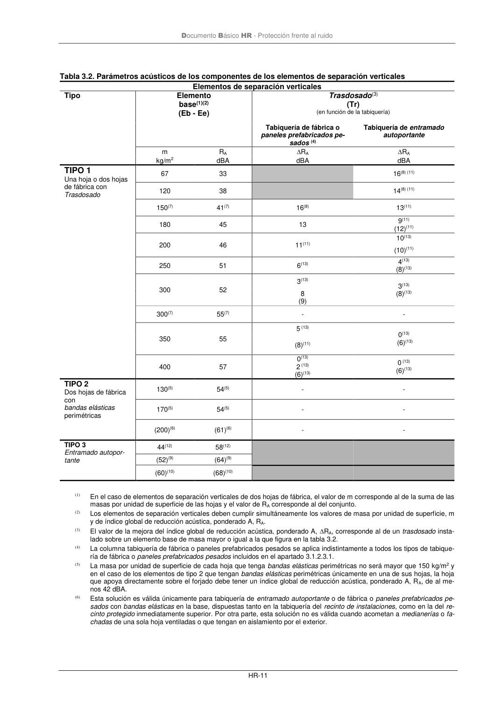

DB-HR Protección frente al ruido · edición 2019-12-20 · capa oficial
Documento DB-HR-oficial · SHA-256 del PDF a67baeca5138bb1f121f797d23a79a4557bd9ac4abacd954024893e05411eeab
Página física 17 de 80.
Copia fiel del PDF fuente · Fuente oficial
Ficha de la disposición en la fuente oficial
Formato: Texto de la página (Markdown)
Documento Básico HR - Protección frente al ruido HR-11 Tabla 3.2. Parámetros acústicos de los componentes de los elementos de separación verticales Elementos de separación verticales Tipo Elemento base(1)(2) (Eb - Ee) Trasdosado(3) (Tr) (en función de la tabiquería) Tabiquería de fábrica o paneles prefabricados pe- sados (4) Tabiquería de entramado autoportante m RA RA RA kg/m2 dBA dBA dBA TIPO 1 Una hoja o dos hojas de fábrica con Trasdosado 67 33 16(8) (11) 120 38 14(8) (11) 150(7) 41(7) 16(8) 13(11) 180 45 13 9(11) (12)(11) 200 46 11(11) 10(13) (10)(11) 250 51 6(13) 4(13) (8)(13) 300 52 3(13) 3(13) (8)(13) 8 (9) 300(7) 55(7) - - 350 55 5 (13) 0(13) (6)(13) (8)(11) 400 57 0(13) 2 (13) (6)(13) 0 (13) (6)(13) TIPO 2 Dos hojas de fábrica con bandas elásticas perimétricas 130(5) 54(5) - - 170(5) 54(5) - - (200)(6) (61)(6) - - TIPO 3 Entramado autopor- tante 44(12) 58(12) (52)(9) (64)(9) (60)(10) (68)(10) (1) En el caso de elementos de separación verticales de dos hojas de fábrica, el valor de m corresponde al de la suma de las masas por unidad de superficie de las hojas y el valor de RA corresponde al del conjunto. (2) Los elementos de separación verticales deben cumplir simultáneamente los valores de masa por unidad de superficie, m y de índice global de reducción acústica, ponderado A, RA. (3) El valor de la mejora del índice global de reducción acústica, ponderado A, RA, corresponde al de un trasdosado insta- lado sobre un elemento base de masa mayor o igual a la que figura en la tabla 3.2. (4) La columna tabiquería de fábrica o paneles prefabricados pesados se aplica indistintamente a todos los tipos de tabique- ría de fábrica o paneles prefabricados pesados incluidos en el apartado 3.1.2.3.1. (5) La masa por unidad de superficie de cada hoja que tenga bandas elásticas perimétricas no será mayor que 150 kg/m2 y en el caso de los elementos de tipo 2 que tengan bandas elásticas perimétricas únicamente en una de sus hojas, la hoja que apoya directamente sobre el forjado debe tener un índice global de reducción acústica, ponderado A, RA, de al me- nos 42 dBA. (6) Esta solución es válida únicamente para tabiquería de entramado autoportante o de fábrica o paneles prefabricados pe- sados con bandas elásticas en la base, dispuestas tanto en la tabiquería del recinto de instalaciones, como en la del re- cinto protegido inmediatamente superior. Por otra parte, esta solución no es válida cuando acometan a medianerías o fa- chadas de una sola hoja ventiladas o que tengan en aislamiento por el exterior.

Datos candidatos: compruebe celdas y notas en el PDF.